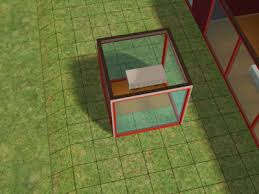

Hexagonal Grid Reference
With some games, tile based movement is implemented. However such tiles can end up being square grid based, usually used in the Command and Conquer games or in Final Fantasy Tactics. Having a square grid gives structure to games where a lot of mechanics are being used in one go to give an easier, more enjoyable experience
 In Sims, grid mechanics are used for building to ensure furniture and walls all fit in nicely, so the plater doesn't neet to worry about placement.
This grid style placement can end up being used constantly within games, and can lead to familiarity between similar games of the same genre, or even an unnaturally “Manhattan style” layout all over the game which can get repetitive and boring. To fix this problem, a hexagonal grid can be used instead; this doesn’t mean using a square grid is necessarily a bad thing, its all just comes down to what kind of game the grid will be implemented into as using a hexagon grid in Sims would end up over complicating the game and giving an unpleasant experience.
A hexagonal grid within a game can make a more natural world landscape as apposed to mountains and landscape following a more block styled nature such as Minecraft. Games such as Civilisation 5 and onward use this hexagonal grid as apposed to their older counterparts as it makes the game more realistic in terms of land generation. It also gives better tactics in terms of how you can go about doing various things within the game in order to get the better outcome, such as manoeuvring units behind enemy units easier.
With a square grid, it is easier to tell which tile is which, due to learning within school about X and Y coordinates, however with a hexagonal grid, the use of X and Y coordinates are still used, but a Z coordinate is also added due to the nature of a hexagonal tile.